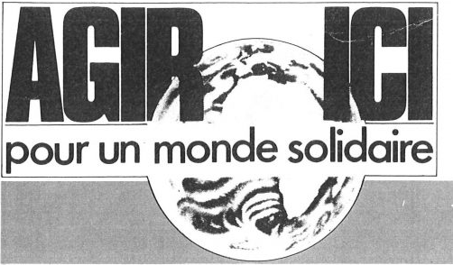

30 ans d’actions citoyennes pour un
monde
solidaire
C’était en 1988. Il y a 30 ans. Un groupe de citoyennes et de citoyens, engagé·e·s dans le monde
associatif,
lançait un Appel qui sonnait alors comme un pari. Celui de rassembler toutes les personnes
souhaitant promouvoir
des relations « Nord-Sud » plus éthiques, plus justes, pour agir durablement contre les inégalités
mondiales et la
pauvreté.
Ainsi est née l’association Agir ici pour un monde solidaire, qui deviendra
Oxfam France en 2006 en rejoignant la
confédération internationale Oxfam.
C’était il y a 30 ans, mais la pertinence de cet Appel fait fi des années écoulées.
Interpeller les responsables politiques et économiques, faire grandir le nombre de citoyennes et de
citoyens
engagé·e·s, sensibiliser et alerter l’opinion publique, tout cela afin de construire durablement un
monde plus
solidaire. 30 ans d’actions n’ont pas fait dévier cette ligne, qui reste au cœur de notre identité.
Jean-Marie Fardeau, co-initiateur d’Agir ici et secrétaire national de 1988 à 1996 : « 30 ans après sa naissance, la raison d’être de l’association reste entière. Certains mauvais esprits diront que c’est un signe de notre impuissance. Si nous étions plus efficaces, le monde serait différent et n’aurait plus besoin d’une association comme la nôtre. Mais, dans la vie réelle, les forces qui tirent le monde vers l’abîme restent beaucoup plus puissantes que celles appelant à un changement de modèle de développement et à une construction plus solidaire. C’est pour cela que, depuis 30 ans, Oxfam France se bat chaque jour pour rendre ce monde plus juste. Avec toujours la même énergie et la même volonté. »
Un mouvement citoyen chaque jour plus important
En 30 ans, notre mouvement citoyen a grandi et avancé pour faire reculer la pauvreté. De quelques
personnes à
l’origine, soutenues rapidement par une soixantaine de personnalités, nous étions 1 000 le 30
septembre 1988.
Cette croissance est allée grandissante, renforçant le poids de nos actions et de notre voix auprès
de celles et ceux
qui définissent les règles du jeu. Nous étions plus de 10 000 personnes engagées ensemble lorsque
notre
mouvement est entré dans le 21e siècle.
En 2006, en rejoignant la confédération internationale Oxfam, nous avons joint nos forces à un réseau mondial.
Depuis notre création, nous le savons : la mobilisation citoyenne ne connaît pas – et ne doit pas
connaître – de
frontières.
Aujourd’hui, notre mouvement citoyen est fort de sa diversité et de ses engagements pluriels :
- Dans le monde :
- 19 affiliés Oxfam à travers le monde – soit un réseau de près de 10 000 salariés, plus
de 100 000
bénévoles et des milliers de partenaires – qui travaillent de concert et en complémentarité pour agir
ensemble tant sur les causes que sur les conséquences de la pauvreté.
- 19 affiliés Oxfam à travers le monde – soit un réseau de près de 10 000 salariés, plus
de 100 000
- En France :
- Plus de 27 000 donatrices et donateurs.
- Plus de 6 000 sportifs·ves solidaires qui ont marché en France pour un monde plus juste depuis 2010.
- Un réseau d’une douzaine de groupes locaux et 6 magasins solidaires.
- Plus de 200 000 personnes qui suivent nos actualités en France, car s’informer est la
première étape de
l’action !